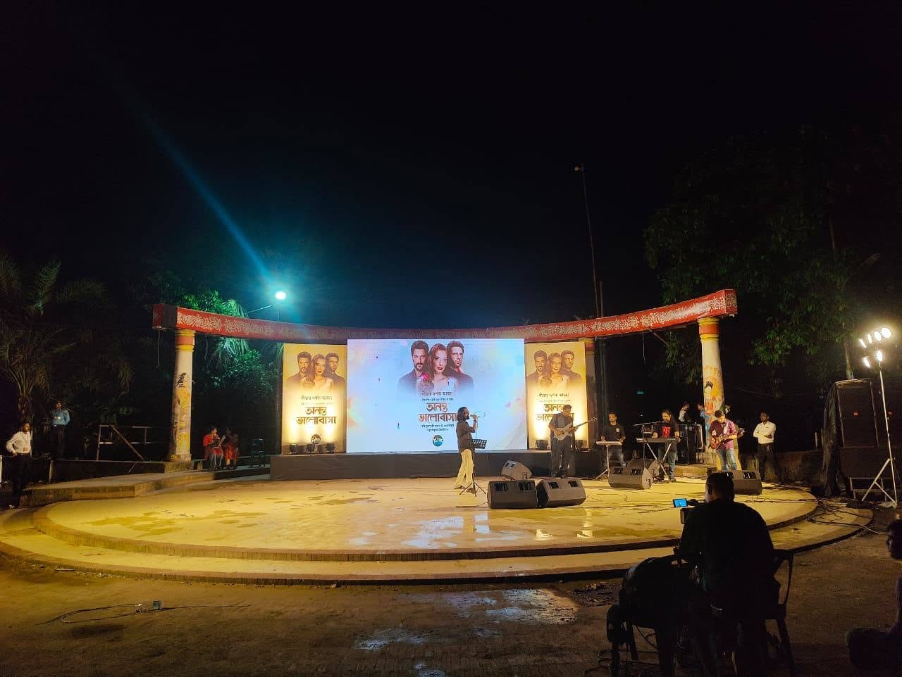

Concert & Live — Signature Project
Ananta Bhalobasa by Deepto TV A Night of Music and Entertainment
Ananta Bhalobasa, presented by Deepto TV, was a vibrant entertainment event that brought together live music, talented performers, an enthusiastic audience, and an energetic stage atmosphere. Designed around the excitement of live performances, the event created an engaging environment where music and entertainment remained at the heart of the evening. The presence of live bands and the enthusiastic response of the audience gave the program a dynamic character, making it an enjoyable and memorable occasion for everyone present.
Dreamweaver Events at Ananta Bhalobasa
Dreamweaver Events was proud to be part of the Ananta Bhalobasa event, taking responsibility for the sound production and stage lighting. These two technical elements played an important role in supporting the live performances and creating the event’s atmosphere. From preparing the sound system and stage lighting before the show to managing technical requirements during the performances, the Dreamweaver Events team stayed involved throughout the production to ensure a smooth, engaging live experience.
Preparing the Sound for Live Performances
For an event centered around live music, sound production is one of the most important technical requirements. The audience needs to hear the artists clearly, while musicians need an appropriate sound environment to perform confidently. For Ananta Bhalobasa, Dreamweaver Events prepared a professional audio setup designed to support the live bands and other stage activities. Microphones, instrument inputs, audio connections, and other necessary sound elements were arranged and checked before the program began so that the system was ready for the demands of the live performances.
Soundcheck Before the Show
Before the audience experienced the performances, the technical team carried out the necessary sound checks to ensure that the audio system was properly prepared. Live bands can involve multiple instruments, vocals, and different audio sources, making soundcheck an essential part of the preparation process. The Dreamweaver Events team checked the microphones and instruments, adjusted levels, and worked to create a balanced sound environment. This preparation helped ensure that the performers could take the stage with confidence and that the audience would receive a clear and powerful audio experience.
Supporting the Live Bands
The live bands were an important part of Ananta Bhalobasa, bringing energy and excitement to the stage through their performances. Supporting a live band requires careful coordination because several instruments and microphones need to be managed simultaneously. Each instrument contributes differently to the overall sound, while vocals need to remain clear and prominent. Dreamweaver Events handled the sound requirements for the bands, ensuring that the technical setup could accommodate the musicians and that their performances could reach the audience with the right level of clarity and energy.
Creating a Balanced Live Sound
A successful live performance depends on maintaining the right balance between different elements of the music. Vocals, instruments, and other audio sources all need to work together without one overpowering another. During Ananta Bhalobasa, the sound team monitored the performances and managed the audio environment to maintain that balance. As the intensity of the music changed throughout the program, the technical team remained attentive to the sound levels and overall mix, helping the performances maintain their impact while preserving clarity for the audience.
Sound That Carried the Energy of the Event
Live music has a unique energy that comes from experiencing a performance in the same physical space as the artists. The sound system plays a major role in delivering that energy to the audience. At Ananta Bhalobasa, the sound production was prepared to ensure that the music could be experienced with both impact and clarity. The powerful performances of the bands were supported by an audio environment that allowed the audience to hear the music effectively while remaining connected to the performers on stage.
Stage Lighting for a Vibrant Atmosphere
Alongside the sound production, Dreamweaver Events handled the stage lighting for the event. Lighting helped shape the appearance and atmosphere of the stage, creating a more energetic setting for the live performances. Rather than serving only as basic illumination, the lighting was used to add movement, variation, and visual interest to the stage. This became particularly noticeable during the high-energy musical performances, when dynamic lighting helped reinforce the excitement created by the music.
Lighting That Complemented the Performances
Every performance has its own energy and character, and stage lighting can help reflect those changes. During Ananta Bhalobasa, the lighting environment supported the live performances by helping focus attention on the artists and by adding atmosphere to the stage. Changes in lighting intensity and movement contributed to the changing mood of the program, helping the stage feel more dynamic as the performances progressed. The intention was to complement the artists and music rather than distract from them.
Bringing Sound and Lighting Together
Sound and lighting may be two separate technical disciplines, but they contribute to the same overall audience experience. At Ananta Bhalobasa, the live music created the primary source of energy while the stage lighting helped express that energy visually. As performances became more energetic, the stage environment responded accordingly. This combination helped create a more complete entertainment experience, allowing the audience to not only hear the performances but also experience the atmosphere surrounding them.
Technical Preparation Behind the Scenes
Long before the first artist stepped onto the stage, the technical preparation for the event had already begun. Equipment needed to be positioned, audio connections had to be arranged, microphones and instruments needed to be tested, and the lighting system had to be prepared. The Dreamweaver Events team worked through these technical requirements ahead of the live program so that the sound and lighting systems were ready when the event began. Careful preparation was important because live events provide very little opportunity to stop and correct problems once a performance is underway.
Managing the Technical Requirements of the Artists
Different performers can have different technical requirements, particularly when live bands are involved. Instruments, microphones, stage positions, and audio levels may vary from one performance to another. Dreamweaver Events worked within the event setup to accommodate these changing requirements and provide the necessary technical support for the artists. The focus remained on making the stage environment comfortable and dependable so that the performers could concentrate on their music and interaction with the audience.
Live Technical Operation During the Event
Once the program began, the work of the technical team continued throughout the performances. Live sound requires constant attention because volume and dynamics can change from one moment to another. At the same time, lighting needs to remain coordinated with the stage and the flow of the program. The Dreamweaver Events team remained on-site and actively managed the sound and lighting during the event, responding to the needs of the performances and helping maintain consistency from one segment to the next.
Supporting a Smooth Flow of Performances
An entertainment event can include several performances and stage activities, which means transitions are an important part of the overall experience. Changes between artists may require adjustments to microphones, instruments, sound levels, and lighting. These changes need to happen efficiently so that the momentum of the event is not interrupted. During Ananta Bhalobasa, the technical team remained prepared to manage these transitions and support the program as it moved from one performance to another.
The Importance of Professional Sound
For an audience, sound quality can make a major difference in the experience of a live event. Clear vocals allow people to connect with the artist, while balanced instruments allow the music to retain its character and energy. Poorly managed sound can distract from even a great performance, while well-managed sound allows the audience to focus on the music. At Ananta Bhalobasa, Dreamweaver Events focused on delivering a sound environment that supported the artists and helped the audience enjoy the live performances.
Lighting as Part of the Stage Experience
Stage lighting can change the feeling of an event without changing the performance itself. It can make a stage feel energetic, dramatic, celebratory, or intimate depending on how it is used. For Ananta Bhalobasa, the lighting added an important visual dimension to the live performances. The stage remained active and engaging as the lighting helped highlight the performers and support the changing energy of the program.
The Energy of the Audience
The audience was an important part of the atmosphere throughout Ananta Bhalobasa. Live music naturally creates interaction between performers and spectators, and the response of the crowd added another layer of energy to the event. As the bands performed, the audience responded to the music, creating the kind of lively environment that makes live entertainment special. The sound and lighting production supported this atmosphere by ensuring that the performances could be experienced clearly and presented with the visual energy expected from a live show.
A Complete Entertainment Environment
The combination of live music, stage lighting, performers, and audience interaction created a complete entertainment environment at Ananta Bhalobasa. Each element contributed to the overall character of the event. The artists delivered the performances, the audience brought enthusiasm and excitement, and the technical production provided the sound and lighting needed to support the experience. This combination allowed the event to maintain a lively atmosphere throughout the evening.
Attention to Every Performance
Every performance brings its own requirements and its own energy. A production team needs to remain attentive even after the event has already begun because the technical needs can change as the program progresses. At Ananta Bhalobasa, the Dreamweaver Events team continued to monitor and manage the technical systems throughout the event. From sound levels to stage lighting, the team remained focused on maintaining the quality of the live production while supporting each performance.
Behind the Music and the Lights
While the audience experienced the artists, music, and atmosphere, a technical team was continuously working behind the scenes to make sure everything remained ready and operational. Sound engineers monitored the live audio, while the lighting team managed the stage environment. Equipment and connections needed to remain under observation throughout the program, and the technical crew needed to be ready to respond whenever adjustments were required. This behind-the-scenes work was an essential part of keeping the live event running smoothly.
A Memorable Evening by Deepto TV
Ananta Bhalobasa brought together music and entertainment in a lively event environment created for audiences to enjoy live performances. The event offered an evening filled with music, stage activity, and audience engagement, with live bands playing a central role in the program. The combination of strong performances and a vibrant stage atmosphere helped make the event a memorable entertainment experience.